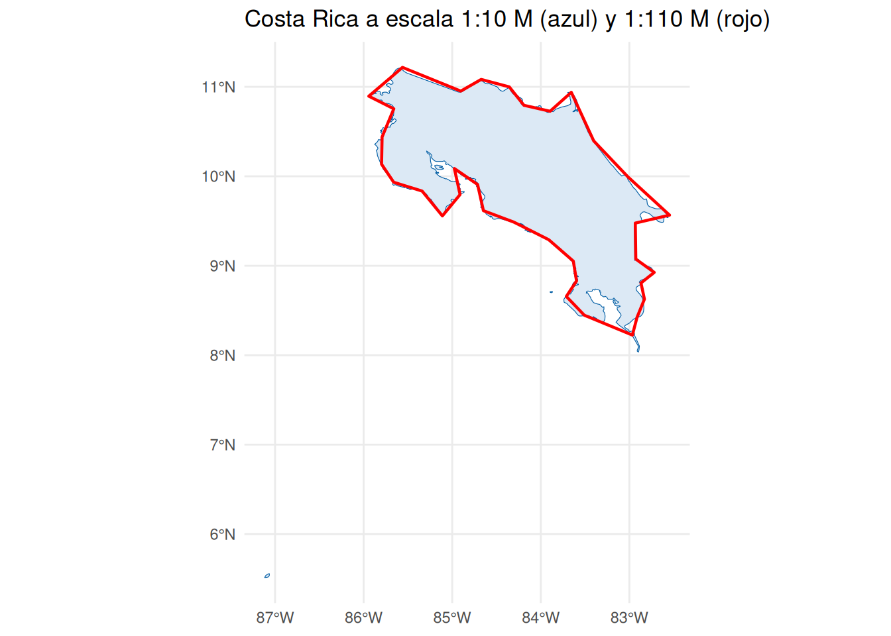
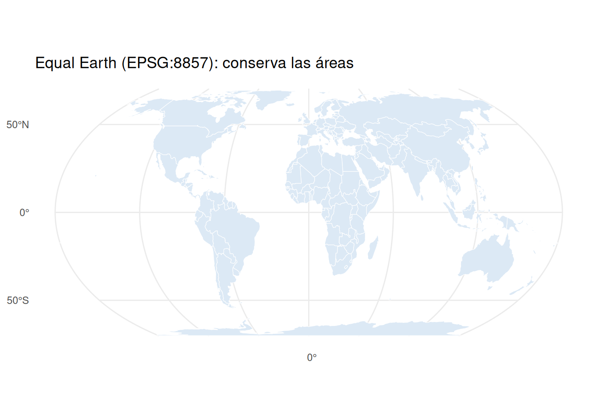
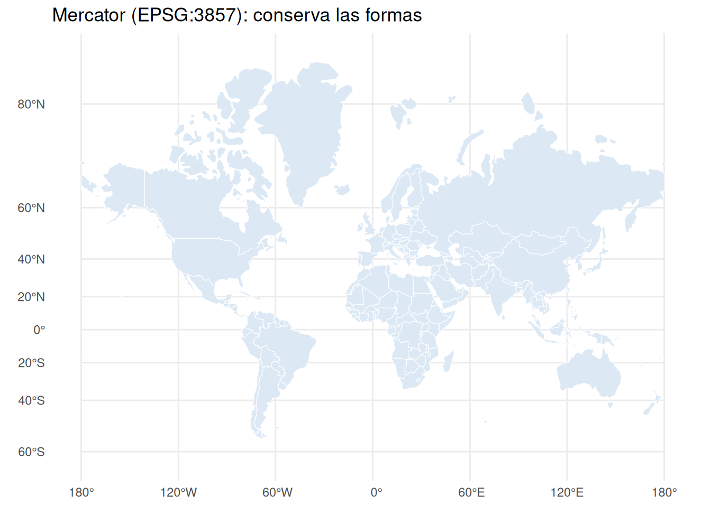
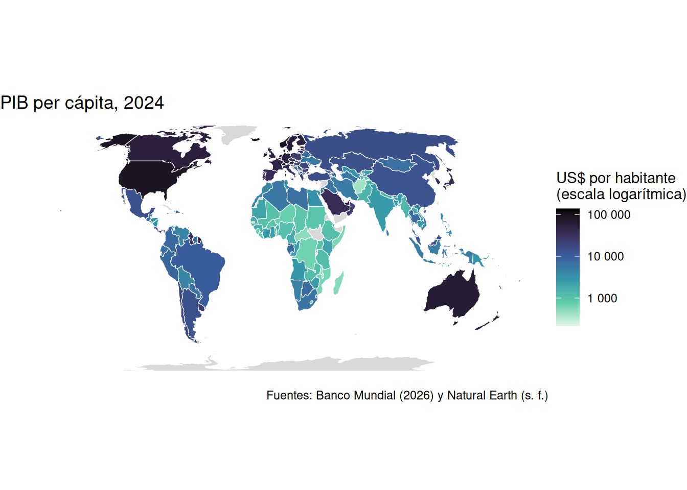
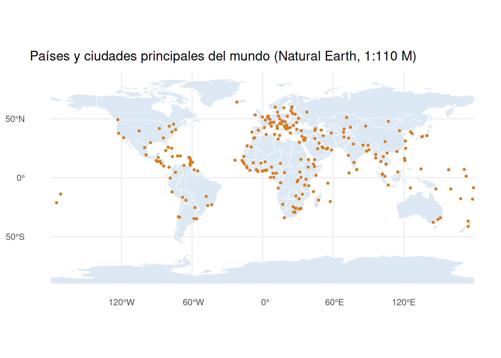
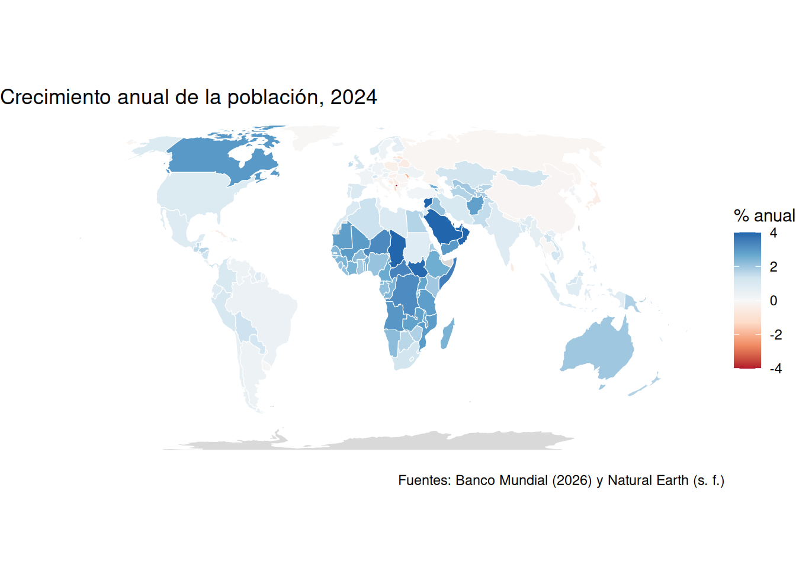
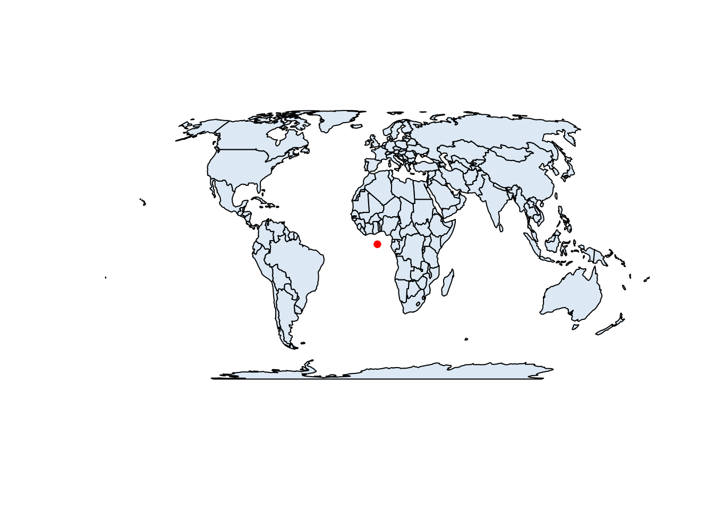

library(tidyverse)
library(sf)
# Directorios de datos en el repositorio del curso
datos_ne <- "https://raw.githubusercontent.com/pf0953-programacionr/2026-ii/main/datos/natural-earth/"
datos_bm <- "https://raw.githubusercontent.com/pf0953-programacionr/2026-ii/main/datos/banco-mundial/"sf: datos geoespaciales vectoriales
Trabajo previo
Lecturas
Antes de la clase, revise las siguientes lecturas. Las dos primeras son los capítulos 1 y 2 de Geocomputation with R, el libro de referencia de esta sección, asignados por el programa del curso: el primero presenta la geocomputación y el ecosistema geoespacial de R, y del segundo interesa la sección 2.2, sobre los datos vectoriales y el paquete sf (la sección 2.3, sobre rasters, es lectura complementaria). La tercera es la primera viñeta de la documentación de sf, por su autor, y presenta la estructura de los objetos sf con ejemplos cortos.
Lovelace, R., Nowosad, J., y Münchow, J. (2025). Introduction. En Geocomputation with R (2.ª ed.). Chapman and Hall/CRC. https://r.geocompx.org/intro
Lovelace, R., Nowosad, J., y Münchow, J. (2025). Geographic data in R. En Geocomputation with R (2.ª ed.). Chapman and Hall/CRC. https://r.geocompx.org/spatial-class
Pebesma, E. (s. f.). Simple features for R. En sf: Simple features for R. Recuperado el 11 de octubre de 2026, de https://r-spatial.github.io/sf/articles/sf1.html
Otros recursos
Antes de la clase, instale el paquete ejecutando en la consola de RStudio install.packages("sf"). En Windows y macOS se instala una versión precompilada que incluye las bibliotecas GDAL, GEOS y PROJ, y tarda unos minutos; en Linux hay que instalar antes esas bibliotecas con el gestor de paquetes del sistema (las instrucciones están en la página de instalación de sf). Compruebe la instalación con library(sf): debe mostrar un mensaje con las versiones de GEOS, GDAL y PROJ. Tenga a mano el proyecto pf0953 y el capítulo anterior, que presenta los conceptos que aquí se usan; la hoja de referencia de sf es útil mientras se practica.
Introducción
El capítulo anterior presentó los conceptos: el modelo vectorial, el estándar Simple Features, los sistemas de referencia de coordenadas (SRC) y los formatos de archivo. Este los pone en práctica con sf, el paquete de R para datos geoespaciales vectoriales, creado por Edzer Pebesma en 2016 (Pebesma, 2018). Su nombre proviene del estándar Simple Features, que implementa; y, como se adelantó en el capítulo de tidyverse, sigue las convenciones del tidyverse sin formar parte de él, por lo que todo lo aprendido sobre dplyr y ggplot2 se aprovecha sin cambios.
La idea central del paquete cabe en una frase: un objeto sf es un data frame con una columna de geometrías. Cada fila es una entidad geográfica (un país, una ciudad), las columnas son sus atributos (el nombre, la población, el continente) y una columna especial, por lo general llamada geometry o geom, contiene la geometría de cada fila: un punto, una línea o un polígono. Por eso filter(), select(), left_join() y group_by() funcionan con un objeto sf como con cualquier otro data frame, y la geometría acompaña a los datos en cada operación. Por debajo, sf se apoya en tres bibliotecas de software que usan casi todas las herramientas geoespaciales, incluidos QGIS y PostGIS: GDAL, que lee y escribe los formatos de archivo; GEOS, que ejecuta las operaciones geométricas; y PROJ, que transforma coordenadas entre SRC.
Los datos de este capítulo cambian de escala. En lugar de los cantones de Costa Rica, se usan los países del mundo de Natural Earth, un conjunto de datos cartográficos de dominio público con capas de países, ciudades, aeropuertos, ríos y lagos a varias escalas, y los indicadores del desarrollo mundial del Banco Mundial, con una fila por país. Ambos están preparados para el curso en los directorios datos/natural-earth/ y datos/banco-mundial/ del repositorio, cada uno con un LEEME que describe sus archivos y variables. La escala mundial tiene una ventaja didáctica: con datos de todo el planeta, las consecuencias de elegir un sistema de referencia de coordenadas u otro se ven a simple vista en el mapa —un país que parece el doble de grande, un mapa estirado—, mientras que a la escala de un país solo se notan al medir. Los cantones de Costa Rica, con sus polígonos, y los registros de presencia de félidos de GBIF vuelven en el capítulo siguiente, con las operaciones espaciales, y en la tarea 3.
Este capítulo cubre lo que hace falta para empezar: leer una capa, entender su estructura, dibujarla con ggplot2, manejar el SRC, unir la capa con datos tabulares y producir un mapa de coropletas. La lectura complementaria del final amplía con la conversión de una tabla con coordenadas en puntos (que el capítulo siguiente retoma con los félidos de GBIF), la medición en la proyección local de Costa Rica, la clasificación y las paletas divergentes de las coropletas, y la escritura de capas. El capítulo siguiente trata las operaciones espaciales (relaciones entre capas, uniones espaciales, zonas de influencia, agregación) y, más adelante, el de leaflet produce mapas interactivos a partir de los mismos objetos.
Al cargar sf aparece un mensaje como Linking to GEOS 3.12.1, GDAL 3.8.4, PROJ 9.4.0; sf_use_s2() is TRUE: indica las versiones de las tres bibliotecas y que el paquete usa la biblioteca s2 para las geometrías en coordenadas geográficas. No es un error; como en los capítulos anteriores, message: false lo oculta en el documento. Las dos direcciones se guardan en objetos para no repetirlas: paste0() las une con el nombre de cada archivo.
Lectura de capas vectoriales
La función st_read() lee cualquier formato vectorial que GDAL conozca —GeoPackage, shapefile, GeoJSON, KML y muchos más— desde una ruta local o desde una URL, y devuelve un objeto sf. Casi todas las funciones de sf empiezan con el prefijo st_ (de spatial type, heredado de PostGIS), lo que facilita encontrarlas con el autocompletado de RStudio. La capa de países de Natural Earth a escala 1:110 millones, en formato GeoPackage:
paises <- st_read(paste0(datos_ne, "paises.gpkg"))Reading layer `paises' from data source
`https://raw.githubusercontent.com/pf0953-programacionr/2026-ii/main/datos/natural-earth/paises.gpkg'
using driver `GPKG'
Simple feature collection with 177 features and 9 fields
Geometry type: MULTIPOLYGON
Dimension: XY
Bounding box: xmin: -180 ymin: -90 xmax: 180 ymax: 83.64513
Geodetic CRS: WGS 84El mensaje describe lo que se leyó: la capa paises, con el controlador (driver) GPKG, 177 entidades (features, las filas) y 9 campos (fields, las columnas de atributos); el tipo de geometría, MULTIPOLYGON; la extensión (bounding box), el rectángulo que encierra todas las geometrías, aquí el mundo entero; y el SRC, geodésico (geográfico), WGS 84. Con quiet = TRUE el mensaje se omite. Al imprimir el objeto se repite ese encabezado y se muestran las primeras filas:
paisesSimple feature collection with 177 features and 9 fields
Geometry type: MULTIPOLYGON
Dimension: XY
Bounding box: xmin: -180 ymin: -90 xmax: 180 ymax: 83.64513
Geodetic CRS: WGS 84
First 10 features:
codigo iso3 nombre nombre_en continente
1 FJI FJI Fiyi Fiji Oceanía
2 TZA TZA Tanzania Tanzania África
3 SAH ESH Sahara Occidental W. Sahara África
4 CAN CAN Canadá Canada América del Norte
5 USA USA Estados Unidos United States of America América del Norte
6 KAZ KAZ Kazajistán Kazakhstan Asia
7 UZB UZB Uzbekistán Uzbekistan Asia
8 PNG PNG Papúa Nueva Guinea Papua New Guinea Oceanía
9 IDN IDN Indonesia Indonesia Asia
10 ARG ARG Argentina Argentina América del Sur
subregion poblacion_estimada pib_millones
1 Melanesia 889953 5496
2 África oriental 58005463 63177
3 África septentrional 603253 907
4 América septentrional 37589262 1736425
5 América septentrional 328239523 21433226
6 Asia central 18513930 181665
7 Asia central 33580650 57921
8 Melanesia 8776109 24829
9 Asia sudoriental 270625568 1119190
10 América del Sur 44938712 445445
grupo_ingreso geom
1 4. Ingreso mediano bajo MULTIPOLYGON (((180 -16.067...
2 5. Ingreso bajo MULTIPOLYGON (((33.90371 -0...
3 5. Ingreso bajo MULTIPOLYGON (((-8.66559 27...
4 1. Ingreso alto: OCDE MULTIPOLYGON (((-122.84 49,...
5 1. Ingreso alto: OCDE MULTIPOLYGON (((-122.84 49,...
6 3. Ingreso mediano alto MULTIPOLYGON (((87.35997 49...
7 4. Ingreso mediano bajo MULTIPOLYGON (((55.96819 41...
8 4. Ingreso mediano bajo MULTIPOLYGON (((141.0002 -2...
9 4. Ingreso mediano bajo MULTIPOLYGON (((141.0002 -2...
10 3. Ingreso mediano alto MULTIPOLYGON (((-68.63401 -...Es un data frame de 177 filas con el código y el nombre de cada país, su continente, su subregión, una estimación de población, el PIB y el grupo de ingreso, y una columna geom con un multipolígono por país, impreso en WKT y abreviado. Las coordenadas son grados de longitud y latitud. Tres funciones describen la parte geoespacial del objeto:
class(paises)[1] "sf" "data.frame"st_geometry(paises)Geometry set for 177 features
Geometry type: MULTIPOLYGON
Dimension: XY
Bounding box: xmin: -180 ymin: -90 xmax: 180 ymax: 83.64513
Geodetic CRS: WGS 84
First 5 geometries:MULTIPOLYGON (((180 -16.06713, 180 -16.55522, 1...MULTIPOLYGON (((33.90371 -0.95, 34.07262 -1.059...MULTIPOLYGON (((-8.66559 27.65643, -8.665124 27...MULTIPOLYGON (((-122.84 49, -122.9742 49.00254,...MULTIPOLYGON (((-122.84 49, -120 49, -117.0312 ...st_crs(paises)$epsg[1] 4326class()muestra que el objeto es a la vez de la clasesfy de la clasedata.frame: lo primero le da las funciones geoespaciales; lo segundo, todas las de los data frames.st_geometry()extrae la columna de geometrías, cualquiera que sea su nombre (geomaquí;geometryen otros archivos), como un objeto de la clasesfc(simple feature column). Todas son multipolígonos, aunque la mayoría de los países tiene un solo cuerpo: la capa se guardó con el tipo «multi» para toda ella, lo que permite representar los países con islas o partes separadas.st_crs()devuelve el SRC completo; con$epsgse obtiene solo el código, más cómodo de comparar. WGS84, EPSG:4326, es el SRC en que se distribuyen casi todos los datos globales. Se retoma en la sección sobre SRC.
La escala de una capa determina para qué sirve. A 1:110 M, Costa Rica es un polígono de unos pocos vértices; Natural Earth publica las mismas capas a 1:50 M y 1:10 M, y el repositorio del curso incluye los países de Centroamérica a 1:10 M, para mapas de la región. Las dos versiones del país, una sobre la otra (el mapa usa geom_sf(), de la sección sobre mapas):
centroamerica <- st_read(paste0(datos_ne, "centroamerica.gpkg"), quiet = TRUE)
ggplot() +
geom_sf(data = filter(centroamerica, nombre == "Costa Rica"), fill = "#dce9f5", color = "#005da4") +
geom_sf(data = filter(paises, nombre == "Costa Rica"), fill = NA, color = "red", linewidth = 0.8) +
labs(title = "Costa Rica a escala 1:10 M (azul) y 1:110 M (rojo)") +
theme_minimal()
Las dos capas están en el mismo SRC; difieren en el detalle de las geometrías (y en el tamaño del archivo). Un archivo GeoPackage puede contener varias capas; st_layers() las lista, y el argumento layer de st_read() elige una. Para un shapefile se indica la ruta del archivo .shp (los demás archivos del conjunto deben estar en el mismo directorio) y para un GeoJSON, la del archivo .geojson. Las capas publicadas como servicios WFS se leen con la URL del servicio, como en el ejemplo siguiente, con la capa de cantones del SNIT (que no se ejecuta en el curso, para no depender de la disponibilidad del servicio):
# Capa de cantones del SNIT, directamente del servicio WFS del IGN
cantones_wfs <- st_read(
"WFS:https://geos.snitcr.go.cr/be/IGN_5_CO/wfs",
layer = "IGN_5_CO:limitecantonal_5k"
)Ejercicios de esta sección: ejercicios sobre lectura y estructura.
Un objeto sf es un data frame
Todos los verbos de dplyr funcionan con un objeto sf y el resultado conserva la geometría. Los países de América del Sur, ordenados por población:
america_sur <- paises |>
filter(continente == "América del Sur") |>
arrange(desc(poblacion_estimada))
america_surSimple feature collection with 13 features and 9 fields
Geometry type: MULTIPOLYGON
Dimension: XY
Bounding box: xmin: -81.41094 ymin: -55.61183 xmax: -34.72999 ymax: 12.4373
Geodetic CRS: WGS 84
First 10 features:
codigo iso3 nombre nombre_en continente subregion
1 BRA BRA Brasil Brazil América del Sur América del Sur
2 COL COL Colombia Colombia América del Sur América del Sur
3 ARG ARG Argentina Argentina América del Sur América del Sur
4 PER PER Perú Peru América del Sur América del Sur
5 VEN VEN Venezuela Venezuela América del Sur América del Sur
6 CHL CHL Chile Chile América del Sur América del Sur
7 ECU ECU Ecuador Ecuador América del Sur América del Sur
8 BOL BOL Bolivia Bolivia América del Sur América del Sur
9 PRY PRY Paraguay Paraguay América del Sur América del Sur
10 URY URY Uruguay Uruguay América del Sur América del Sur
poblacion_estimada pib_millones grupo_ingreso
1 211049527 1839758 3. Ingreso mediano alto
2 50339443 323615 3. Ingreso mediano alto
3 44938712 445445 3. Ingreso mediano alto
4 32510453 226848 3. Ingreso mediano alto
5 28515829 482359 3. Ingreso mediano alto
6 18952038 282318 3. Ingreso mediano alto
7 17373662 107435 3. Ingreso mediano alto
8 11513100 40895 4. Ingreso mediano bajo
9 7044636 38145 4. Ingreso mediano bajo
10 3461734 56045 3. Ingreso mediano alto
geom
1 MULTIPOLYGON (((-53.37366 -...
2 MULTIPOLYGON (((-66.87633 1...
3 MULTIPOLYGON (((-68.63401 -...
4 MULTIPOLYGON (((-69.89364 -...
5 MULTIPOLYGON (((-60.73357 5...
6 MULTIPOLYGON (((-68.63401 -...
7 MULTIPOLYGON (((-75.37322 -...
8 MULTIPOLYGON (((-69.52968 -...
9 MULTIPOLYGON (((-58.16639 -...
10 MULTIPOLYGON (((-57.62513 -...El resultado es otro objeto sf, de 13 entidades, y su extensión se recalculó: ahora encierra solo ese continente. Con select() ocurre algo particular: la columna de geometría siempre se conserva, aunque no se pida, porque sin ella el objeto dejaría de ser geoespacial:
america_sur |>
select(nombre, poblacion_estimada)Simple feature collection with 13 features and 2 fields
Geometry type: MULTIPOLYGON
Dimension: XY
Bounding box: xmin: -81.41094 ymin: -55.61183 xmax: -34.72999 ymax: 12.4373
Geodetic CRS: WGS 84
First 10 features:
nombre poblacion_estimada geom
1 Brasil 211049527 MULTIPOLYGON (((-53.37366 -...
2 Colombia 50339443 MULTIPOLYGON (((-66.87633 1...
3 Argentina 44938712 MULTIPOLYGON (((-68.63401 -...
4 Perú 32510453 MULTIPOLYGON (((-69.89364 -...
5 Venezuela 28515829 MULTIPOLYGON (((-60.73357 5...
6 Chile 18952038 MULTIPOLYGON (((-68.63401 -...
7 Ecuador 17373662 MULTIPOLYGON (((-75.37322 -...
8 Bolivia 11513100 MULTIPOLYGON (((-69.52968 -...
9 Paraguay 7044636 MULTIPOLYGON (((-58.16639 -...
10 Uruguay 3461734 MULTIPOLYGON (((-57.62513 -...Cuando se quiere solo la tabla de atributos —para mostrarla con knitr::kable() o datatable(), o para unirla a otra tabla—, st_drop_geometry() la quita y devuelve un data frame ordinario. Los países por continente, con count():
paises |>
st_drop_geometry() |>
count(continente, sort = TRUE) continente n
1 África 51
2 Asia 47
3 Europa 39
4 América del Norte 18
5 América del Sur 13
6 Oceanía 7
7 Antártida 1
8 Siete mares (océano abierto) 1El conteo funcionaría también sin quitar la geometría, pero con una diferencia importante que se verá en el capítulo siguiente: summarize() y count() sobre un objeto sf unen las geometrías de cada grupo, lo que aquí produciría el polígono de cada continente, con el costo de cálculo correspondiente. Para resúmenes puramente tabulares, st_drop_geometry() primero.
La diferencia con un data frame común aparece al pedir un gráfico: plot(), la función de gráficos de R base, dibuja las geometrías, y tiene una particularidad que sorprende la primera vez: dibuja un mapa por cada columna de atributos, coloreado según sus valores.
plot(america_sur)
Para ver solo las geometrías se le pasa st_geometry(), y para un solo atributo, el objeto con la columna entre corchetes (america_sur["poblacion_estimada"]). plot() es suficiente para explorar; para comunicar se usa ggplot2.
Ejercicios de esta sección: ejercicios sobre lectura y estructura.
Mapas con ggplot2
Para comunicar, el mapa se construye con lo aprendido en el capítulo de ggplot2 y una geometría nueva, geom_sf(), que dibuja puntos, líneas o polígonos según lo que contenga la columna de geometrías, sin que haga falta mapear x ni y. Los argumentos son los de siempre: fill para el relleno de los polígonos, color para sus bordes o para los puntos, linewidth para el grosor de la línea, size para el tamaño de los puntos y alpha para la transparencia. Los países del mundo:
ggplot() +
geom_sf(data = paises, fill = "#dce9f5", color = "white", linewidth = 0.2) +
labs(title = "Países del mundo (Natural Earth, 1:110 M)") +
theme_minimal()
Como en cualquier gráfico de ggplot2, fill = "#dce9f5", fuera de aes(), fija el relleno; aes(fill = continente) lo mapearía a una columna y produciría una leyenda, como se hace en la sección de coropletas. Y, como las capas de puntos y texto del capítulo de ggplot2, cada geom_sf() puede tener sus propios datos (data =), lo que permite superponer capas: el bloque escalas de la sección anterior dibuja así las dos versiones de Costa Rica, y la lectura complementaria pone las ciudades sobre los países. Los ejes muestran la retícula (graticule) de longitud y latitud; theme_void() la quita por completo, lo que es habitual en los mapas temáticos, y geom_sf_text() (o geom_sf_label(), con fondo) escribe rótulos en un punto interior de cada polígono, lo que se practica en los ejercicios.
El mapa, sin embargo, tiene un defecto: está «estirado». Es el aspecto de un SRC geográfico dibujado directamente, con un grado de longitud tan ancho como uno de latitud en toda la figura, lo que deforma todo lo que está lejos del ecuador. Un mapa del mundo se dibuja en una proyección.
Ejercicios de esta sección: ejercicios sobre mapas.
Sistemas de referencia de coordenadas
El SRC de una capa se consulta con st_crs() y se cambia, reproyectando todas sus geometrías, con st_transform(), que recibe un código EPSG y devuelve una capa nueva. Los países en Equal Earth, una proyección que conserva las áreas, y en Web Mercator, la de los mapas web, que conserva las formas:
paises_ee <- st_transform(paises, 8857)
paises_merc <- st_transform(paises, 3857)
st_crs(paises_ee)$Name[1] "WGS 84 / Equal Earth Greenwich"st_crs(paises_merc)$Name[1] "WGS 84 / Pseudo-Mercator"st_bbox(paises) xmin ymin xmax ymax
-180.00000 -90.00000 180.00000 83.64513 st_bbox(paises_ee) xmin ymin xmax ymax
-16923980 -8392928 16923980 8316222 st_bbox() devuelve la extensión de la capa: los mismos países, en grados y en metros desde el origen de la proyección. El mismo mapa en las dos proyecciones (en Mercator se excluye la Antártida, cuyo polígono llega al polo, donde la proyección se extiende al infinito, y se limita el eje y con coord_sf(), en las unidades del SRC de los datos):
ggplot(paises_ee) +
geom_sf(fill = "#dce9f5", color = "white", linewidth = 0.2) +
labs(title = "Equal Earth (EPSG:8857): conserva las áreas") +
theme_minimal()
paises_merc |>
filter(nombre != "Antártida") |>
ggplot() +
geom_sf(fill = "#dce9f5", color = "white", linewidth = 0.2) +
coord_sf(ylim = c(-9e6, 1.9e7)) +
labs(title = "Mercator (EPSG:3857): conserva las formas") +
theme_minimal()
Las dos proyecciones cuentan historias distintas sobre Groenlandia. No es un detalle menor: como se vio en el capítulo anterior, en setiembre de 2026 la Asamblea General de las Naciones Unidas aprobó una resolución que alienta a usar Equal Earth u otras proyecciones equivalentes en lugar de Mercator cuando importe el tamaño relativo de las regiones. ggplot2 ofrece además un atajo: coord_sf(crs = 8857) reproyecta las capas solo para dibujarlas, sin modificar los objetos; y cuando un mapa combina capas en SRC distintos, ggplot2 las reproyecta todas al SRC de la primera. Es una comodidad del dibujo, no una regla general: en las operaciones espaciales del capítulo siguiente, las capas deben estar en el mismo SRC.
La consecuencia práctica más importante del SRC es la medición. st_area() calcula el área de cada geometría, y el resultado lleva sus unidades, gracias al paquete units; as.numeric() quita las unidades, que es lo que conviene dentro de mutate(). Groenlandia y Brasil en tres SRC:
seleccion <- paises$nombre %in% c("Groenlandia", "Brasil")
tibble(
nombre = paises$nombre[seleccion],
area_wgs84_km2 = round(as.numeric(st_area(paises[seleccion, ])) / 1e6),
area_equal_earth_km2 = round(as.numeric(st_area(paises_ee[seleccion, ])) / 1e6),
area_mercator_km2 = round(as.numeric(st_area(paises_merc[seleccion, ])) / 1e6)
)# A tibble: 2 × 4
nombre area_wgs84_km2 area_equal_earth_km2 area_mercator_km2
<chr> <dbl> <dbl> <dbl>
1 Groenlandia 2189752 2206879 36285503
2 Brasil 8540954 8508179 9059541En Equal Earth, Brasil es casi cuatro veces más grande que Groenlandia, como en la realidad (8,5 contra 2,2 millones de km²); en Mercator, Groenlandia resulta cuatro veces más grande que Brasil. La primera columna merece una explicación: con coordenadas geográficas, sf no devuelve grados cuadrados sin sentido, sino que calcula el área sobre una esfera con la biblioteca s2, y el resultado es una buena aproximación. Pero una proyección adecuada sigue siendo la referencia: para medir áreas a escala mundial, una proyección equivalente, como Equal Earth; para medir en un país, su proyección local, como se muestra en la lectura complementaria con CR-SIRGAS / CRTM05, la de Costa Rica.
Ejercicios de esta sección: ejercicios sobre sistemas de referencia de coordenadas.
Unión con datos tabulares
Las capas de Natural Earth traen la geometría y unos pocos atributos; los indicadores actuales están en el CSV del Banco Mundial. Ambas fuentes identifican los países con códigos de tres letras, así que se unen con left_join(), como cualquier par de tablas, con una regla: el objeto sf va a la izquierda. Si el objeto sf está a la derecha, el resultado es un data frame ordinario en el que la geometría es una columna más, sin funciones geoespaciales.
indicadores <- read_csv(paste0(datos_bm, "indicadores-2024.csv"))
indicadores# A tibble: 217 × 11
codigo pais region grupo_ingreso poblacion crecimiento_poblacion area_km2
<chr> <chr> <chr> <chr> <dbl> <dbl> <dbl>
1 ABW Aruba Améri… Ingreso alto 107995 0.59 180
2 AFG Afganis… Orien… Países de in… 42647492 2.84 652230
3 AGO Angola Áfric… Países de in… 37885849 3.04 1246700
4 ALB Albania Europ… Ingreso medi… 2377128 -1.44 27400
5 AND Andorra Europ… Ingreso alto 81938 1.33 470
6 ARE Emirato… Orien… Ingreso alto 10986400 4.68 71020
7 ARG Argenti… Améri… Ingreso medi… 45696159 0.35 2736690
8 ARM Armenia Europ… Ingreso medi… 3033500 2.31 28199.
9 ASM Samoa A… Asia … Ingreso alto 46765 -1.6 200
10 ATG Antigua… Améri… Ingreso alto 93772 0.49 440
# ℹ 207 more rows
# ℹ 4 more variables: pib_per_capita <dbl>, esperanza_vida <dbl>,
# poblacion_urbana_pct <dbl>, usuarios_internet_pct <dbl>paises_bm <- paises_ee |>
left_join(indicadores, by = "codigo")
class(paises_bm)[1] "sf" "data.frame"sum(is.na(paises_bm$poblacion))[1] 10Diez países quedaron sin datos del Banco Mundial. Como se advirtió en el capítulo de dplyr, una unión no falla cuando las claves no coinciden: deja NA en silencio. anti_join() muestra las filas sin pareja:
paises_ee |>
st_drop_geometry() |>
anti_join(indicadores, by = "codigo") |>
select(codigo, nombre, poblacion_estimada) codigo nombre poblacion_estimada
1 SAH Sahara Occidental 603253
2 FLK Islas Malvinas 3398
3 ATF Tierras Australes y Antárticas Francesas 140
4 PSX Palestina 4685306
5 TWN República de China 23568378
6 ATA Antártida 4490
7 CYN República Turca del Norte de Chipre 326000
8 SOL Somalilandia 5096159
9 KOS Kosovo 1794248
10 SDS Sudán del Sur 11062113Son de dos clases. Algunos no están en el Banco Mundial (la Antártida, Taiwán, Somalilandia y otros territorios sin reconocimiento general). Pero Kosovo, Palestina y Sudán del Sur sí están: con otro código (XKX, PSE y SSD en lugar de KOS, PSX y SDS, como advierte el LEEME). Es el mismo problema de la unión por nombre del capítulo de dplyr: las claves que no coinciden se corrigen antes de unir, aquí con case_when(), que generaliza if_else() a varias condiciones:
paises_ee <- paises_ee |>
mutate(codigo = case_when(
codigo == "KOS" ~ "XKX",
codigo == "PSX" ~ "PSE",
codigo == "SDS" ~ "SSD",
.default = codigo
))
paises_bm <- paises_ee |>
left_join(indicadores, by = "codigo")
sum(is.na(paises_bm$poblacion))[1] 7paises_bm$nombre[is.na(paises_bm$poblacion)][1] "Sahara Occidental"
[2] "Islas Malvinas"
[3] "Tierras Australes y Antárticas Francesas"
[4] "República de China"
[5] "Antártida"
[6] "República Turca del Norte de Chipre"
[7] "Somalilandia" Los siete que quedan no tienen datos en la fuente: en los mapas aparecerán como «sin datos», lo que es correcto. La lectura complementaria usa la unión para verificar las áreas calculadas contra la superficie que publica el Banco Mundial.
Ejercicios de esta sección: ejercicios sobre unión y coropletas.
Mapas de coropletas
Un mapa de coropletas colorea cada polígono según el valor de una variable. En ggplot2 basta con mapear la variable a fill; la escala de color se elige como cualquier otra escala del capítulo de ggplot2. El PIB per cápita, en un primer intento con scale_fill_viridis_c():
ggplot(paises_bm) +
geom_sf(aes(fill = pib_per_capita), color = "white", linewidth = 0.2) +
scale_fill_viridis_c(option = "mako", direction = -1) +
labs(title = "PIB per cápita, 2024 (US$): primer intento") +
theme_void()
Dos problemas. El mapa es casi todo del color más claro: unos pocos países muy ricos estiran la escala y el resto queda indistinguible, la misma asimetría que en el capítulo de ggplot2 obligó a usar escalas logarítmicas, y la solución es la misma: el argumento transform = "log10" de la escala. Y los países sin datos se dibujan en un gris oscuro que se confunde con los valores altos de la escala: na.value fija su color, con un gris claro que se distinga. Además, labels formatea los números de la leyenda y labs() le da nombre y unidades:
ggplot(paises_bm) +
geom_sf(aes(fill = pib_per_capita), color = "white", linewidth = 0.2) +
scale_fill_viridis_c(
option = "mako",
direction = -1,
transform = "log10",
labels = scales::label_number(big.mark = " "),
na.value = "gray85"
) +
labs(
title = "PIB per cápita, 2024",
fill = "US$ por habitante\n(escala logarítmica)",
caption = "Fuentes: Banco Mundial (2026) y Natural Earth (s. f.)"
) +
theme_void()
Ahora se lee el gradiente completo, de los 200 dólares de Burundi a los 140 000 de Luxemburgo, y la Antártida, Groenlandia y los demás países sin datos quedan en gris. La escala continua es una de las opciones: la lectura complementaria muestra la clasificación en pocas clases, con scale_fill_fermenter(), y las paletas divergentes para variables con un valor central, con scale_fill_distiller(). Para una variable categórica, como el continente o el grupo de ingreso, la escala es discreta (scale_fill_brewer(), scale_fill_viridis_d() o scale_fill_manual(), con un color por categoría), lo que se practica en los ejercicios.
Una advertencia de la cartografía temática: un mapa de coropletas debe mostrar variables normalizadas —densidades, tasas, porcentajes, valores per cápita—, no conteos absolutos. Un mapa de la población total colorea de forma más intensa los países más poblados, que suelen ser también los más grandes, y el ojo confunde el tamaño del polígono con la magnitud del fenómeno. Los conteos absolutos se representan mejor con símbolos proporcionales, que se construyen en el capítulo siguiente a partir de los centroides.
Ejercicios de esta sección: ejercicios sobre unión y coropletas.
Mapas en documentos Quarto
Un mapa de ggplot2 es una figura más: las opciones de figura de Quarto (fig-cap, fig-alt, fig-width, fig-height) funcionan igual y, con una etiqueta que empiece con fig-, el mapa se numera y se cita con @fig-…. Dos particularidades. Los mapas del mundo son más anchos que altos y quedan bien con fig-height: 5; los de un país suelen necesitar más alto. Y la lectura de las capas por URL ocurre en cada Render, lo que tarda unos segundos con los archivos del curso; con capas grandes (decenas de megabytes), conviene guardar una versión simplificada o recortada con st_write() (lectura complementaria) y leerla desde el proyecto. Los mapas interactivos, con leaflet, siguen las reglas de los htmlwidgets del capítulo de plotly y DT.
Ejercicios de esta sección: ejercicios sobre publicación, asistentes y datos propios.
Asistentes de IA para generar mapas
Los lineamientos del curso aplican: los asistentes de IA sirven para explicar, depurar, generar y verificar código, se declara su uso y se comprende todo lo que se entrega. Para generar código de mapas, el prompt debe describir el objeto sf —las columnas y, ahora, también el SRC y el tipo de geometría—, pedir el patrón del curso (ggplot2 con geom_sf()) y el resultado debe verificarse con tres comprobaciones específicas: que el código no mezcle SRC en operaciones espaciales (todas las capas en el mismo, reproyectadas antes de medir), que la escala de color sea adecuada a la distribución de la variable (logarítmica o clasificada si es asimétrica; divergente si tiene un valor central; discreta si es categórica) y que la leyenda tenga unidades. Un prompt de ejemplo, con las cuatro partes del capítulo de asistentes:
Actúe como asistente de visualización de datos geoespaciales con R, sf y ggplot2 (rol). Tengo un objeto sf llamado
paises_bm, con un multipolígono por país del mundo en el SRC EPSG:8857 (Equal Earth) y las columnasnombre(texto),continente(texto),poblacion(entero) ypoblacion_urbana_pct(decimal: porcentaje de población urbana en 2024, entre 0 y 100, con valores faltantes) (contexto). Escriba el código de un mapa de coropletas del porcentaje de población urbana, con una paleta secuencial, los países sin datos en gris, leyenda con título y unidades, título, bordes blancos, fuente de los datos en la nota al pie y sin ejes (tarea). Useggplot(paises_bm) + geom_sf(...)y escalas de ggplot2; no use otros paquetes (formato).
Al verificar el código generado, además de las tres comprobaciones, compare el color de dos o tres países conocidos con sus valores en la tabla.
Ejercicios de esta sección: ejercicios sobre publicación, asistentes y datos propios.
Lectura complementaria
Las secciones siguientes no se ven en clase. Conviene leerlas —la conversión de una tabla con coordenadas en puntos es el primer paso del capítulo siguiente y de la tarea 3— y volver a ellas cuando el trabajo las necesite; sus ejercicios son opcionales.
De una tabla con coordenadas a un objeto sf
Los datos de puntos rara vez llegan como capa geoespacial: lo usual es un CSV con dos columnas de coordenadas, como los registros de GBIF de la semana 1, las ciudades de Natural Earth del repositorio, los datos de estaciones o de encuestas, o los que cada estudiante recopile para la tarea 3.
tabla_ciudades <- read_csv(paste0(datos_ne, "ciudades.csv"))
tabla_ciudades# A tibble: 243 × 7
nombre pais codigo_pais capital poblacion longitud latitud
<chr> <chr> <chr> <lgl> <dbl> <dbl> <dbl>
1 Vatican City Vatican VAT TRUE 832 12.5 41.9
2 San Marino San Marino SMR TRUE 29579 12.4 43.9
3 Vaduz Liechtenstein LIE TRUE 36281 9.52 47.1
4 Lobamba eSwatini SWZ FALSE 9782 31.2 -26.5
5 Luxembourg Luxembourg LUX TRUE 107260 6.13 49.6
6 Palikir Federated States… FSM TRUE 4645 158. 6.92
7 Majuro Marshall Islands MHL TRUE 25400 171. 7.10
8 Funafuti Tuvalu TUV TRUE 4749 179. -8.52
9 Melekeok Palau PLW TRUE 7026 135. 7.49
10 Bir Lehlou Western Sahara SAH FALSE 500 -9.65 26.1
# ℹ 233 more rowsst_as_sf() convierte el data frame en un objeto sf a partir de las columnas de coordenadas, indicadas en coords, y del SRC en que están esas coordenadas, en crs:
ciudades <- st_as_sf(
tabla_ciudades,
coords = c("longitud", "latitud"),
crs = 4326
)
ciudadesSimple feature collection with 243 features and 5 fields
Geometry type: POINT
Dimension: XY
Bounding box: xmin: -175.2206 ymin: -41.29999 xmax: 179.2166 ymax: 64.15002
Geodetic CRS: WGS 84
# A tibble: 243 × 6
nombre pais codigo_pais capital poblacion geometry
* <chr> <chr> <chr> <lgl> <dbl> <POINT [°]>
1 Vatican City Vatican VAT TRUE 832 (12.45339 41.90328)
2 San Marino San Mar… SMR TRUE 29579 (12.44177 43.9361)
3 Vaduz Liechte… LIE TRUE 36281 (9.51667 47.13372)
4 Lobamba eSwatini SWZ FALSE 9782 (31.2 -26.46667)
5 Luxembourg Luxembo… LUX TRUE 107260 (6.130003 49.61166)
6 Palikir Federat… FSM TRUE 4645 (158.15 6.916644)
7 Majuro Marshal… MHL TRUE 25400 (171.38 7.103004)
8 Funafuti Tuvalu TUV TRUE 4749 (179.2166 -8.516652)
9 Melekeok Palau PLW TRUE 7026 (134.6265 7.487396)
10 Bir Lehlou Western… SAH FALSE 500 (-9.652522 26.11917)
# ℹ 233 more rowsLas dos columnas de coordenadas desaparecieron y en su lugar hay una columna geometry con un punto por ciudad; el SRC es WGS 84 y la extensión está en grados. Dos detalles causan errores frecuentes. El orden en coords es x, y, es decir, longitud, latitud: al revés del «latitud, longitud» con que suelen escribirse las coordenadas, y si se invierte, las ciudades caen en lugares absurdos. Y crs es indispensable: sin él, el objeto se crea, pero no tiene SRC, por lo que no se puede reproyectar ni combinar con otras capas. Los datos de GBIF, de GPS, de Google Maps y de casi cualquier fuente que hable de «latitud y longitud» están en WGS84, EPSG:4326. El camino inverso, de puntos a tabla, es st_coordinates(), que devuelve una matriz con las columnas X y Y:
ciudades |>
filter(nombre == "San José") |>
st_coordinates() X Y
[1,] -84.086 9.936958Con las ciudades como capa de puntos, el mapa de países se completa con una segunda capa encima, cada una con sus propios datos:
ggplot() +
geom_sf(data = paises, fill = "#dce9f5", color = "white", linewidth = 0.2) +
geom_sf(data = ciudades, color = "#d97b1b", size = 0.8) +
labs(title = "Países y ciudades principales del mundo (Natural Earth, 1:110 M)") +
theme_minimal()
Medición en la proyección local
La sección sobre SRC midió a escala mundial. Para medir en un país se usa su proyección local; la de Costa Rica es CR-SIRGAS / CRTM05 (EPSG:8908), en la que están las capas del IGN del capítulo siguiente:
centroamerica_crtm05 <- centroamerica |>
st_transform(8908) |>
mutate(area_km2 = round(as.numeric(st_area(geom)) / 1e6))
centroamerica_crtm05 |>
st_drop_geometry() |>
select(nombre, area_km2) |>
arrange(desc(area_km2)) nombre area_km2
1 Nicaragua 128735
2 Honduras 112497
3 Guatemala 110073
4 Panamá 74915
5 Costa Rica 51152
6 Belice 22433
7 El Salvador 20679Costa Rica mide unos 51 100 km², la cifra oficial. CRTM05 está diseñada para Costa Rica, y la deformación crece con la distancia a su meridiano central (−84°): el área de Guatemala, a unos 600 km, sale ya un 1 % mayor que en Equal Earth, y la de México, a más de 2 000 km, no sería confiable. La regla: medir en el SRC diseñado para la región de los datos.
Verificación de las áreas con el Banco Mundial
La unión con los indicadores permite verificar las áreas calculadas contra la superficie que publica el Banco Mundial:
paises_bm <- paises_bm |>
mutate(
area_calculada_km2 = round(as.numeric(st_area(geom)) / 1e6),
diferencia_pct = round((area_calculada_km2 - area_km2) / area_km2 * 100, 1)
)
paises_bm |>
st_drop_geometry() |>
select(nombre, area_calculada_km2, area_km2, diferencia_pct) |>
arrange(desc(abs(diferencia_pct))) |>
head() nombre area_calculada_km2 area_km2 diferencia_pct
1 Groenlandia 2206879 410450 437.7
2 Brunéi 10698 5270 103.0
3 Bahamas 15592 10010 55.8
4 Trinidad y Tobago 7742 5130 50.9
5 Gambia 14029 10120 38.6
6 Vanuatu 7489 12190 -38.6La mitad de los países difiere menos de un 3 %, lo razonable para geometrías a 1:110 M. Los casos extremos tienen explicación: el Banco Mundial reporta la superficie terrestre, sin aguas interiores ni, en Groenlandia, la capa de hielo (410 000 km² de los 2,2 millones); y en las islas pequeñas, como Brunéi o Bahamas, la geometría a 1:110 M es demasiado gruesa. Verificar los datos aunque provengan de fuentes oficiales, y entender por qué difieren, es parte del trabajo.
Clasificación de las coropletas
La alternativa a la escala continua es clasificar los valores en pocas clases, cada una con un color, como hacen los SIG de escritorio y los mapas impresos. scale_fill_fermenter() lo hace con las paletas de ColorBrewer: con n.breaks elige cortes «bonitos» (intervalos iguales en la escala, logarítmica si se indica transform), y con breaks acepta los cortes que se le den. Los cuantiles ponen la misma cantidad de países en cada clase y se calculan con quantile():
cortes <- quantile(paises_bm$pib_per_capita, probs = c(0.2, 0.4, 0.6, 0.8), na.rm = TRUE)
cortes 20% 40% 60% 80%
1775.22 4536.68 9313.10 31668.04 ggplot(paises_bm) +
geom_sf(aes(fill = pib_per_capita), color = "white", linewidth = 0.2) +
scale_fill_fermenter(
palette = "YlGnBu",
direction = 1,
breaks = cortes,
labels = scales::label_number(big.mark = " "),
na.value = "gray85"
) +
labs(
title = "PIB per cápita, 2024 (cuantiles)",
fill = "US$ por habitante",
caption = "Fuentes: Banco Mundial (2026) y Natural Earth (s. f.)"
) +
theme_void()
Cada clase tiene unos 33 países, y los cortes (unos 1 800, 4 500, 9 300 y 31 700 dólares) resumen la distribución: tres de cada cinco países tienen un PIB per cápita menor de 9 300 dólares. La clasificación simplifica la lectura a costa de ocultar las diferencias dentro de cada clase; el método elegido cambia el mapa, por lo que debe indicarse en el título o en la leyenda.
Paletas divergentes
Para una variable con un valor central significativo, como el crecimiento de la población (positivo o negativo), lo adecuado es una paleta divergente ("RdBu", "PiYG", "BrBG") centrada en ese valor. scale_fill_distiller() usa esas paletas de forma continua; con limits simétricos respecto al cero, el blanco queda en el centro, y oob = scales::squish lleva al extremo los valores que se salen de los límites en lugar de omitirlos:
ggplot(paises_bm) +
geom_sf(aes(fill = crecimiento_poblacion), color = "white", linewidth = 0.2) +
scale_fill_distiller(
palette = "RdBu",
direction = 1,
limits = c(-4, 4),
oob = scales::squish,
na.value = "gray85"
) +
labs(
title = "Crecimiento anual de la población, 2024",
fill = "% anual",
caption = "Fuentes: Banco Mundial (2026) y Natural Earth (s. f.)"
) +
theme_void()
El patrón geográfico es claro: la población decrece (rojo) en Europa oriental y en Japón, y crece más rápido (azul intenso) en el África subsahariana y en la península arábiga.
Escritura de capas
st_write() guarda un objeto sf en el formato que indique la extensión del archivo. GeoPackage es la opción recomendada, porque conserva el SRC, los tipos de las columnas y los nombres largos; GeoJSON es útil para la web y, por su especificación, debe guardarse en WGS84. Los países de América del Sur con los indicadores, en los dos formatos (como con ggsave() en el capítulo de ggplot2, estos bloques se ejecutan una vez, llevan eval: false en el documento y los archivos quedan en la carpeta del proyecto):
america_sur_bm <- paises_bm |>
filter(continente == "América del Sur") |>
st_transform(4326)
st_write(america_sur_bm, "america-sur.gpkg")
st_write(america_sur_bm, "america-sur.geojson")
# Comprobación: se vuelve a leer el GeoPackage
st_read("america-sur.gpkg", quiet = TRUE)Si el archivo ya existe, st_write() se detiene con un error; delete_dsn = TRUE lo sobrescribe.
Clínica de errores
La tabla 1 recoge los problemas más frecuentes al empezar con sf. El primero de la lista de síntomas sin mensaje merece verse una vez: con plot() de R base, dos capas en SRC distintos no se superponen y no hay ningún aviso; las ciudades en grados sobre los países en metros quedan todas amontonadas cerca del origen, a la escala de los grados. ggplot2 evita ese error al reproyectar, pero las operaciones espaciales del capítulo siguiente no.
plot(st_geometry(paises_ee), col = "#dce9f5")
plot(st_geometry(ciudades), add = TRUE, col = "red", pch = 16)
| Mensaje o síntoma | Causa | Solución |
|---|---|---|
there is no package called 'sf'
|
El paquete no está instalado. |
install.packages("sf") en la consola, una sola vez. Si la instalación falla en Linux, faltan GDAL, GEOS o PROJ en el sistema.
|
could not find function "st_read"
|
sf está instalado pero no cargado, o el library(sf) está después del bloque que falla.
|
Agregar library(sf) al bloque de preparación.
|
Cannot open "https://…"; The file doesn't seem to exist. con HTTP error code : 404
|
La URL está mal escrita, o no es la URL cruda (Raw) del archivo. | Probar la URL en el navegador: debe descargar el archivo, no mostrar una página de GitHub. |
Opening layer failed
|
El argumento layer nombra una capa que el archivo no contiene.
|
st_layers("archivo.gpkg") lista las capas disponibles.
|
plot() dibuja muchos mapas pequeños
|
Es el comportamiento de plot() con un objeto sf: un mapa por atributo.
|
plot(st_geometry(x)) o x["columna"]; para presentar, ggplot2.
|
Con plot(…, add = TRUE), la segunda capa no aparece o queda amontonada en un punto
|
Capas en SRC distintos: no hay mensaje. |
Reproyectar con st_transform() al SRC de la primera capa.
|
| El mapa de ggplot2 es diminuto, o el mapa en Mercator es una franja | La extensión incluye una geometría lejana (la Isla del Coco en los cantones) o la Antártida, que en Mercator se extiende al infinito. |
coord_sf(xlim = …, ylim = …) con los límites en las unidades del SRC, o filter() para excluir la geometría.
|
Can't subset columns that don't exist en st_as_sf()
|
Los nombres de coords no son los de las columnas del data frame.
|
Revisar los nombres con names(); en GBIF son decimalLongitude y decimalLatitude.
|
missing values in coordinates not allowed
|
Filas con NA en la longitud o la latitud.
|
filter(!is.na(longitud), !is.na(latitud)) antes de st_as_sf().
|
| Los puntos aparecen en lugares absurdos (el océano, la Antártida) |
Las columnas de coords están al revés (latitud, longitud).
|
El orden es c("longitud", "latitud"): x, y.
|
cannot transform sfc object with missing crs
|
El objeto no tiene SRC: se creó con st_as_sf() sin crs.
|
Agregar crs = 4326 (o el código que corresponda a las coordenadas).
|
st_crs(x) == st_crs(y) is not TRUE
|
Una operación espacial entre capas con SRC distintos. |
Reproyectar una de ellas con st_transform() al SRC de la otra.
|
stat_sf() requires the following missing aesthetics: geometry después de una unión
|
El objeto sf quedó a la derecha de left_join() y el resultado es un data frame común.
|
El objeto sf va a la izquierda: capa |> left_join(tabla, by = …).
|
La unión deja NA en las columnas nuevas
|
Claves que no coinciden exactamente (códigos distintos, tildes, grafías). |
anti_join() en las dos direcciones; corregir con case_when() antes de unir.
|
| El mapa de coropletas es casi todo de un solo color | Variable asimétrica con escala lineal. |
transform = "log10" en la escala, o clases con scale_fill_fermenter().
|
Discrete value supplied to a continuous scale
|
Se mapeó una columna de texto a fill con una escala continua (viridis_c, fermenter, distiller).
|
Usar una escala discreta (scale_fill_viridis_d(), scale_fill_manual(), scale_fill_brewer()).
|
Removed n rows containing missing values en un mapa de coropletas
|
Advertencia, no error: países sin datos en la variable mapeada. |
na.value = "gray85" en la escala, para que aparezcan como «sin datos».
|
Dataset already exists en st_write()
|
El archivo ya existe. |
delete_dsn = TRUE para sobrescribirlo.
|
| El Render tarda mucho o el HTML pesa decenas de megabytes | Capas muy detalladas leídas y dibujadas en cada Render. |
Simplificar (st_simplify()) o recortar la capa, guardarla con st_write() y leer esa versión.
|
Resumen
- sf implementa el estándar Simple Features en R sobre GDAL, GEOS y PROJ. Un objeto sf es un data frame con una columna de geometrías: los verbos de dplyr funcionan y conservan la geometría;
st_drop_geometry()la quita para trabajar solo con los atributos. st_read()lee cualquier formato vectorial, desde rutas o URL.st_geometry(),st_crs()yst_bbox()describen la geometría, el SRC y la extensión. La escala de la capa determina su uso.- Lectura complementaria: una tabla con coordenadas se convierte en puntos con
st_as_sf(coords = c("longitud", "latitud"), crs = 4326): en ese orden y con el SRC declarado;st_coordinates()hace el camino inverso. En Costa Rica se mide en CR-SIRGAS / CRTM05; las coropletas se clasifican conscale_fill_fermenter()y usan paletas divergentes conscale_fill_distiller();st_write()guarda capas, preferiblemente en GeoPackage. st_transform()reproyecta. Un mapa del mundo se dibuja en una proyección (Equal Earth, EPSG:8857), no en WGS84;st_area()mide, con unidades, y se mide en una proyección equivalente a escala mundial o en la local del país. Para dibujar, ggplot2 reproyecta las capas por su cuenta; para las operaciones espaciales, deben estar en el mismo SRC.left_join()une una capa con una tabla con el objeto sf a la izquierda; las claves que no coinciden (los códigos de Kosovo, Palestina y Sudán del Sur) se detectan conanti_join()y se corrigen antes de unir.geom_sf()dibuja mapas con ggplot2, superponiendo capas condata;coord_sf()fija los límites o la proyección del dibujo. Un mapa de coropletas mapea una variable normalizada afill, con una escala logarítmica si es asimétrica, discreta si es categórica, y conna.valuepara los valores faltantes.
Ejercicios
Los ejercicios se agrupan según la sección del capítulo a la que corresponden y se resuelven en un documento Quarto nuevo del proyecto pf0953, mapas.qmd, con el mismo encabezado YAML de graficos.qmd y un bloque preparacion igual al del inicio del capítulo. Varios suponen ejecutados los bloques de las secciones anteriores (paises, paises_ee con los códigos corregidos, centroamerica, indicadores y paises_bm; los de la lectura complementaria, además, ciudades y centroamerica_crtm05). Los ejercicios de las secciones de la lectura complementaria (3, 4, 7, 8, 10, 11 y la primera parte del 12) son opcionales.
Lectura y estructura
Lea en un objeto
aeropuertosla capa de aeropuertos de Natural Earth (paste0(datos_ne, "aeropuertos.gpkg")) e imprímalo. ¿Cuántas entidades y cuántos campos tiene, cuál es el tipo de geometría y cuál el SRC? Luego, conpaises, cuente los países de cada continente: ¿cuál continente tiene más países en la capa?Obtenga en
africalos países de África a partir depaises_eey compruebe, imprimiendo el resultado, que sigue siendo un objeto sf, en Equal Earth, y que la extensión cambió. Luego, const_drop_geometry(),select(),arrange()yknitr::kable(), muestre una tabla con los diez países más poblados del continente.
Puntos (lectura complementaria)
Construya a mano, con
tribble(), una tabla con tres lugares que conozca (por ejemplo, su casa, la Escuela de Geografía y un sitio de interés), con columnasnombre,longitudylatitudobtenidas de Google Maps u OpenStreetMap, y conviértala en el objeto sflugarescon el SRC correcto. Dibújelo sobrecentroamerica(o sobrepaises, si los lugares están en otra región) y verifique que los puntos caen donde deben. Luego reproyectelugaresa CR-SIRGAS / CRTM05 (o al SRC proyectado de su país) y observe las coordenadas const_coordinates(): ¿en qué unidades están y qué tan grandes son los números?Prediga antes de ejecutar: ¿dónde quedan las ciudades si
st_as_sf()recibecoords = c("latitud", "longitud")? Compruébelo const_bbox()del resultado y explique los valores. Luego cree el objeto sin el argumentocrs, consultest_crs()e intentest_transform(…, 8857): anote el mensaje de error y búsquelo en la clínica de errores.
Mapas
Dibuje el mapa de
africa(ejercicio 2) con los países en un color claro, los límites en blanco, el nombre de cada país congeom_sf_text(), título ytheme_void(). Si hizo la lectura complementaria, agregue las ciudades del continente encima (filtreciudadespor los códigos de país deafrica; ggplot2 las reproyecta para dibujarlas). ¿Cuántos países tiene el continente en la capa?Prediga antes de ejecutar qué dibuja cada instrucción: de qué color es cada país, cuántos colores hay y qué muestra la leyenda; luego ejecute:
ggplot(paises_ee) + geom_sf(aes(fill = continente), color = "white", linewidth = 0.2) ggplot(paises_ee) + geom_sf(aes(fill = poblacion_estimada), color = "white", linewidth = 0.2)Después de ejecutar, haga clic aquí para ver la explicación
Cuando
filles una columna de texto, ggplot2 usa una escala discreta: un color distinto por valor (ocho, uno por continente, con la paleta categórica por defecto) y una leyenda con la lista de categorías. Es la forma más rápida de ver a qué grupo pertenece cada polígono. Cuando es una columna numérica, usa una escala continua, con una barra de color; y como la población es muy asimétrica (China e India tienen más de mil millones de habitantes; la mitad de los países, menos de diez millones), casi todos los países quedan del color más oscuro y solo esos dos se distinguen: es la razón de las escalas logarítmicas y de las clases de la sección de coropletas.
Sistemas de referencia de coordenadas
(Lectura complementaria) Reproyecte
ciudadesa Web Mercator enciudades_mercy a Equal Earth enciudades_ee. Obtenga const_coordinates()las coordenadas de San José de Costa Rica en los tres SRC y explique en el texto por qué los tres pares de números representan el mismo lugar.(Lectura complementaria) Una
centroamerica_crtm05con los indicadores del Banco Mundial (porcodigo, con el objeto sf a la izquierda; como las dos tablas tienen una columnaarea_km2, renombre antes la calculada, por ejemplo aarea_calculada_km2) y agregue la columnadiferencia_pctentre el área calculada en CRTM05 y la superficie terrestre del Banco Mundial. ¿En cuál país es mayor la diferencia y por qué? Pista: el Banco Mundial reporta superficie terrestre; piense qué tiene ese país que los demás no. Luego calcule el área de cada país también en Equal Earth y compárela con la de CRTM05: ¿cuánto de la diferencia se debe a la proyección y en cuál país es mayor ese efecto?
Unión y coropletas
Dibuje un mapa de coropletas de la esperanza de vida de los países de América del Sur (filtre
paises_bmpor continente), con la paleta viridis, leyenda con unidades, los países sin datos en gris, el nombre de cada país congeom_sf_text()y título. ¿Cuál país tiene la mayor esperanza de vida y cuál la menor? Compruébelo conarrange()sobre la tabla.(Lectura complementaria) Dibuje un mapa de coropletas del porcentaje de personas que usan Internet (
usuarios_internet_pctdepaises_bm) clasificado en cinco clases por cuantiles conscale_fill_fermenter(), con la paleta"YlGnBu", los países sin datos en gris, leyenda con título y unidades, y título. Compárelo con una versión de escala continua: ¿qué muestra la clasificación que la escala continua no, y viceversa?(Lectura complementaria) Dibuje un mapa de coropletas del porcentaje de población urbana (
poblacion_urbana_pct) con la paleta divergente"BrBG"centrada en el 50 % (conlimits = c(0, 100), el centro de la paleta queda en 50). ¿En qué regiones del mundo predomina la población rural? Interprete el patrón geográfico en un párrafo.
Publicación, asistentes y datos propios
(Primera parte, lectura complementaria) Guarde
africacon los indicadores del Banco Mundial (únalos primero, con los códigos ya corregidos) en un GeoPackageafrica.gpkgy vuelva a leerlo enafrica_leido. Compruebe que el SRC y la cantidad de entidades se conservaron. Luego, para todos, dele al mapa del ejercicio 9 un bloque con etiquetafig-esperanza-vida,fig-cap,fig-altyfig-height, cítelo en el texto, procesemapas.qmdcon Render y publíquelo en el repositoriopractica-quarto, junto con los documentos anteriores.Pida a un asistente de IA el código del prompt de ejemplo de la sección de asistentes (coropletas de la población urbana) y verifíquelo: lea el código, compruebe que usa la columna indicada y no inventa otras, que los países sin datos aparecen en gris, que la leyenda tiene unidades, y compare el color de tres países con sus valores en
paises_bm. Documente en el texto del documento el asistente, el prompt, el código y el resultado de las comprobaciones, como en la declaración de uso de IA de la tarea 2.Para la tarea 3, que agrega el componente geoespacial a los datos de su tema, cargue en un objeto sf la fuente que identificó en el ejercicio 6 del capítulo anterior (con
st_read(), o const_as_sf()si es un CSV con coordenadas), imprímalo, anote su SRC, su cantidad de entidades y su tipo de geometría, y dibújelo sobre la capa que corresponda a su extensión:paises,centroamericao, para Costa Rica, los cantones del repositorio del curso (https://raw.githubusercontent.com/pf0953-programacionr/2026-ii/main/datos/cantones.gpkg, en CRTM05). Si sus datos son tabulares por país, cantón o provincia, únalos a la capa correspondiente y verifique la unión conanti_join(). Anote qué preguntas podría responder al combinarlos con otras capas.
Referencias bibliográficas
Banco Mundial. (2026). Indicadores del desarrollo mundial [conjunto de datos]. Recuperado el 6 de octubre de 2026, de https://datos.bancomundial.org/
Lovelace, R., Nowosad, J., y Münchow, J. (2025). Geocomputation with R (2.ª ed.). Chapman and Hall/CRC. https://r.geocompx.org/
Natural Earth. (s. f.). Natural Earth: Free vector and raster map data [conjunto de datos]. Recuperado el 4 de octubre de 2026, de https://www.naturalearthdata.com/
Pebesma, E. (2018). Simple features for R: Standardized support for spatial vector data. The R Journal, 10(1), 439–446. https://doi.org/10.32614/RJ-2018-009
Pebesma, E. (s. f.). sf: Simple features for R. Recuperado el 11 de octubre de 2026, de https://r-spatial.github.io/sf/
Pebesma, E., y Bivand, R. (2023). Spatial data science: With applications in R. Chapman and Hall/CRC. https://r-spatial.org/book/
Pebesma, E., y Bivand, R. (2026). sf: Simple features for R (versión 1.1-1) [paquete de R]. https://CRAN.R-project.org/package=sf
Wickham, H., Navarro, D., y Pedersen, T. L. (2025). Maps. En ggplot2: Elegant graphics for data analysis (3.ª ed.). https://ggplot2-book.org/maps